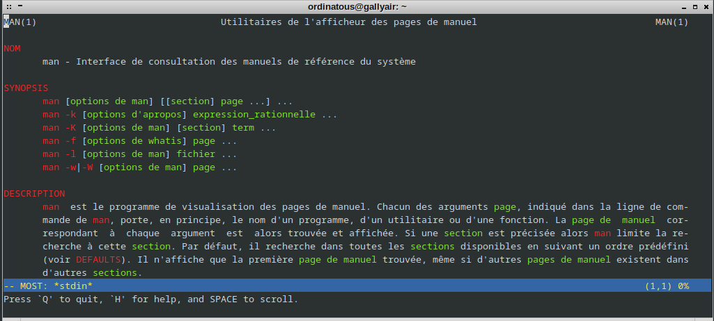
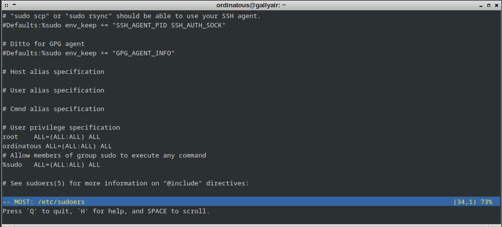

Pour faire suite au précédent article, je cherchais des exemples que j’ai rencontré à mes débuts.
Lorsque l’on débute sous linux on est vite confronté à des concepts sans pour autant avoir d’explications simple et rapide.
Ce monde peut sembler un peu fermé et beaucoup de savoirs sont considérés comme étant acquis…
Les sommes de controle
Un exemple tout simple, vous voulez récupérer un fichier, comme un ISO, et vous tombez là dessus:
Et débrouilles toi avec ça. Sans explication…
Pour faire simple, lorsqu’un développeur présente son travail, il va générer une empreinte et la fournir. Une commande toute simple permet de savoir si l’empreinte est identique pour s’assurer que les données n’ont pas était altérée durant le téléchargement, ou modifié par un individu qui vous fournirait ensuite l’ISO.
md5
Cette fonction de hachage est considérée comme non fiable, il ne s’agit ici que d’un simple téléchargement, pas de panique.
Pour vérifier la somme de contrôle , il suffit d’un simple:
md5sum cbpp-12.1-amd64-20240201.iso
67f1b571bde49a98f4a729dfba0edbca cbpp-12.1-amd64-20240201.iso
Et de comparer, c’est tout.
sha256 sha512
sha256 et sha512 sont 2 autres fonctions de hachage considérées comme plus fiable et plus solide.
Téléchargeons HirenBoot
et comparons l’empreinte avec un simple sha256sum:
sha256sum HBCD_PE_x64.iso
8c4c670c9c84d6c4b5a9c32e0aa5a55d8c23de851d259207d54679ea774c2498 HBCD_PE_x64.iso
Voilà, ce n’est pas très compliqué, mais quand ce n’est pas expliqué , je comprends que cela puisse rebuter un novice.
Téléchargement wget et curl
Il existe plusieurs outils pour télécharger en ligne de commande wget et curl. curl est souvent utilisé simplement pour vérifier le statut d’un serveur web et récupérer sa réponse.
wget est souvent utiliser pour véritablement télécharger un document au sein d’un serveur, on peut l’utiliser sur un site lorsqu’il n’y a pas de lien de téléchargement, dans un script pour automatiser la récupération d’une archive.
Ou encore la signature d’un dépôt , par exemple Firefox:
wget -q https://packages.mozilla.org/apt/repo-signing-key.gpg -O- | sudo tee /etc/apt/keyrings/packages.mozilla.org.asc > /dev/null
-
Avantage de wget
wget dispose de nombreuses options:
- il est en mode TCP
- il peut travailler en background ou en mode interactif
- il peut faire de l’authentification
- vérifier les certificats (le https)
- faire du récursif et garder la structure des sous répertoires ou pas
- on peut lui indiquer à quelle profondeur aller (max 5)
- suivre les liens de téléchargement FTP d’une page web
- faire du FTP et FTPS
- afficher une barre de progression
- sélectionner qu’un type de fichier
- envoyer un user-agent pour dire à un site que vous êtes connecté avec internet explorer par exemple
Alors pour tester ceci, jetons un œil à la cave de Arpinux et télécharger tout les dessins animés Cobra, attention 8,5G:
wget -r -np --user-agent=Firefox -l5 -k -E https://arpinux.org/public/cobra/
Je recommande la lecture du man, mais avant ça …
RTFM
Les joies d’internet, et des forums linux.
Le débutant, au détour d’une question un peu maladroite, mal posée, ou d’un problème mal exposé, se voit opposer un brutal RTFM.
Mais brutal, le débutant l’ignore encore, ça dégénère très vite lorsqu’il demande ce que cela veut dire, renvoyant le novice avec un sentiment de frustration, et l’impression que le monde de linux est peuplé de connard.
Ce phénomène tant à disparaître, soit parce que le guru a appris à fermer sa gueule, soit parce qu’il s’est fait ban, et ce type d’individu remporte l’immense satisfaction de ne pas aider un débutant. Considérant que son RTFM aura été la meilleure aide que l’on puisse apporter.
Bref, le novice doit apprendre vite, doit découvrir vite, et doit apprendre à trouver les informations utile à la résolution de son problème, et exposer clairement son objectif.
C’est là, que l’apprentissage du cli semble obscure et frustrante, à taper des commandes que l’on ne comprend pas encore, avec la parano d’être entouré de requins qui ne cherchent qu’à vous hacker.
Les man-pages
Une page de manuel est la documentation de référence d’une commande. Une page de manuel doit contenir une description de cette commande avec ses options, la syntaxe de son fichier de configuration et quelques exemples d’utilisations.
Le paquet man contient trois outils pour obtenir de l’aide ou des informations sur votre système Linux : man, apropos et whatis. source debian.org
Chouette vous direz-vous, eh bien oui et non , d’abord c’est en anglais et sont partiellement traduites en français.
Pour bénéficier de la traduction, il faut installer le package idoine:
sudo apt install manpages-fr manpages-fr-dev
Comme souvent, une réponse soulève d’autres questions, et il est difficile d’expliquer l’utilisation de man sans faire du copier-coller ou de digression…
Maintenant que vous avez installé la version francisée, on va regarder le manuel de man, et
entrant man man dans un terminal.
MAN(1) Utilitaires de l'afficheur des pages de manuel MAN(1)
NOM
man - Interface de consultation des manuels de référence du système
SYNOPSIS
man [options de man] [[section] page ...] ...
man -k [options d'apropos] expression_rationnelle ...
man -K [options de man] [section] term ...
man -f [options de whatis] page ...
man -l [options de man] fichier ...
man -w|-W [options de man] page ...
DESCRIPTION
man est le programme de visualisation des pages de manuel. Chacun des arguments page, indiqué dans la ligne de com‐
mande de man, porte, en principe, le nom d'un programme, d'un utilitaire ou d'une fonction. La page de manuel cor‐
respondant à chaque argument est alors trouvée et affichée. Si une section est précisée alors man limite la re‐
cherche à cette section. Par défaut, il recherche dans toutes les sections disponibles en suivant un ordre prédéfini
(voir DEFAULTS). Il n'affiche que la première page de manuel trouvée, même si d'autres pages de manuel existent dans
d'autres sections.
Le tableau ci-dessous indique le numéro des sections de manuel ainsi que le type de pages qu'elles contiennent.
1 Programmes exécutables ou commandes de l'interpréteur de commandes (shell)
2 Appels système (fonctions fournies par le noyau)
3 Appels de bibliothèque (fonctions fournies par les bibliothèques des programmes)
4 Fichiers spéciaux (situés généralement dans /dev)
5 Formats des fichiers et conventions. Par exemple /etc/passwd
6 Jeux
7 Miscellaneous (including macro packages and conventions), e.g. man(7), groff(7), man-pages(7)
8 Commandes de gestion du système (généralement réservées au superutilisateur)
9 Sous-programmes du noyau [hors standard]
Une page de manuel est constituée de plusieurs sections.
Voilà, comme dit plus haut, cela soulève de nouvelles questions, l’article n’a pas pour but de détailler chaque nouvelles découvertes, au début vous utiliserez simplement le man sans options.
Utilitaires par défaut et alternatives
Sans le savoir, lorsque vous entrez des commandes, par exemple man, vous appelez un utilitaire qui est configuré par défaut dans votre système, qui est less.
PAGER
less appartient au package util-linux , less est défini dans la variable PAGER, ainsi lorsque votre commande a besoin d’afficher un document textuel, elle se réfère à la variable PAGER et appelle less.
Admettons que je veuille changer de PAGER, je vais installer most qui va me donner une plus jolie mise en page des man-pages.
Il y a plusieurs moyen de le faire, je peux entrer:
export PAGER=most
dans mon terminal, mais ce ne serait valable que pour la session actuelle, je peux aussi l’écrire dans mon .bashrc. Mais dans ce cas, ce ne serait valable que pour mon utilisateur.
Dans le cas d’un serveur d’entreprise, il convient de définir quels sont les utilitaires par défaut, sinon 2 admins vont s’échanger des commandes, et des méthodes qui ne correspondent pas à leur environnement respectif.
La méthode la plus propre est d’utiliser update-alternative. Ce package est fait pour, et permet également de lister la configuration par défaut.
Listons
J’ai tronqué la sortie, on voit ici , que j’ai déjà modifié mon PAGER, il est passé en manual.
update-alternatives --get-selections
pager manual /usr/bin/most
pico auto /bin/nano
Modifions
sudo update-alternatives --config pager
[sudo] Mot de passe de ordinatous :
Il existe 4 choix pour l'alternative pager (qui fournit /usr/bin/pager).
Sélection Chemin Priorité État
------------------------------------------------------------
* 0 /usr/bin/less 77 mode automatique
1 /bin/more 50 mode manuel
2 /usr/bin/less 77 mode manuel
3 /usr/bin/most 60 mode manuel
4 /usr/bin/w3m 25 mode manuel
Appuyez sur <enter> pour conserver le choix actuel [*], ou tapez le numéro de sélection : 3
Si maintenant je fais un man man:

Sympa !!
EDITOR
De même que pour le PAGER, il y a un éditeur par défaut qui est défini par la variable EDITOR.
Lorsque par exemple vous voulez modifier le fichier /etc/sudoers pour vous ajouter, vous seriez tenter d’aller écrire directement dedans. Alors faisons le test:
sudo vi /etc/sudoers
Et lorsque j’entre en mode insertion de vi , j’ai un message d’alerte:
Pour modifier ce fichier , il faut utiliser visudo, alors testons:
On s’aperçoit qu’il s’agit de nano, c’est un bon éditeur qui fait le job, j’ai une préférence pour vi , en réalité vim qui est plus moderne.
Et si j’affiche le fichier, on constate qu’il a bien été modifié: 
Modifions mon éditeur:
sudo update-alternatives --config editor
Il existe 4 choix pour l'alternative editor (qui fournit /usr/bin/editor).
Sélection Chemin Priorité État
------------------------------------------------------------
* 0 /bin/nano 40 mode automatique
1 /bin/ed -100 mode manuel
2 /bin/nano 40 mode manuel
3 /usr/bin/vim.basic 30 mode manuel
4 /usr/bin/vim.tiny 15 mode manuel
Appuyez sur <enter> pour conserver le choix actuel [*], ou tapez le numéro de sélection : 3
Si je retente de modifier le fichier /etc/sudoers avec sudo visudo:
On constate que nous sommes bien dans vi, ici il a sa configuration par défaut , mais il est hautement configurable, et a 2 modes de fonctionnement:
- commande
- edition (insertion)
Mais je ne suis pas là pour vendre vi. L’utilisateur sera déjà bien en peine de comprendre comment éditer dans nano avant de comprendre que le symbole ^ correspond en réalité à ctrl (la touche controle du clavier).
Je pense que ce sera tout pour la partie 2, je réfléchie à la partie 3 …